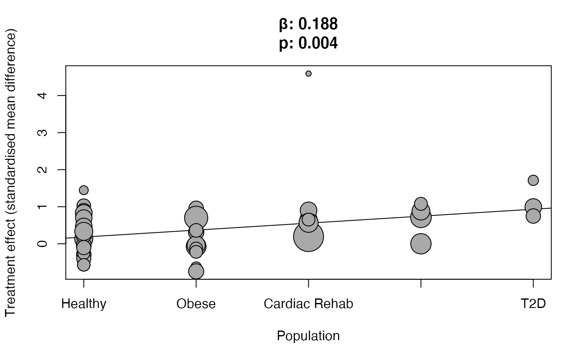

The {metabolic} package provides you all the tools necessary to reproduce the meta-analysis published in Medicine & Science in Sports & Exercise.
You can easily read the paper in the journal website through the function metabolic::read_paper(). It will take you to the online published paper in your default browser.
We also provide you all the data used to perform the meta-analysis and the GOfER (Graphical Overview for Evidence Reviews) diagram. In case you are not familiar with R, or just would like to download the data, you can do so in the metabolic_meta and in the metabolic_gofer vignettes.
The easiest way of reproducing the meta-analysis for a given clinical endpoint is using the metabolic::build_report()function, which will build an HTML report with all the results, including R output and plots. Try it out! Make sure you also choose a path to save the report to!
library(metabolic) build_report(endpoint = "VO2max", path = "~/Documents/VO2max_report")
In case you want to reproduce the analysis on your own, we provided you the necessary tools for that! Here we will walk you through all the functionalities. In this example, we will be reproducing a meta-analysis on VO2max.
library(metabolic) results <- perform_meta(endpoint = "VO2max")
results#> # A tibble: 8 x 4
#> subgroup meta_analysis sensitivity_analysis meta_regression
#> <chr> <named list> <named list> <named list>
#> 1 Overall <metacont> <metainf> <lgl [1]>
#> 2 Population <metacont> <lgl [1]> <metareg>
#> 3 Age <metacont> <lgl [1]> <metareg>
#> 4 Training Duration <metacont> <lgl [1]> <metareg>
#> 5 Men Ratio <metacont> <lgl [1]> <metareg>
#> 6 Type of Exercise <metacont> <lgl [1]> <metareg>
#> 7 Baseline Values <metacont> <lgl [1]> <metareg>
#> 8 Type of HIIE <metacont> <lgl [1]> <metareg>
This function is going to perform the overall meta-analysis, followed by a sensitivity analysis where the meta-analysis in run again omitting one study at a time. This is done to ensure that the meta-analysis results are robust and is not being influenced by a single study.
In case the sensitivity analysis detects that there is a single study influencing the results, the study identifier (Author Year) is printed, and the meta-analysis is re-done without that study. Importantly, this study is excluded from the overall meta-analysis, but is still considered in subgroup analyses.
As an example, here is the output from the HbA1c meta-analysis, where there sensitivity analysis recognizes a single-study influence on the results:
perform_meta(endpoint = "HbA1c")
#> # A tibble: 8 x 4
#> subgroup meta_analysis sensitivity_analysis meta_regression
#> <chr> <named list> <named list> <named list>
#> 1 Overall <metacont> <metainf> <lgl [1]>
#> 2 Population <metacont> <lgl [1]> <metareg>
#> 3 Age <metacont> <lgl [1]> <metareg>
#> 4 Training Duration <metacont> <lgl [1]> <metareg>
#> 5 Men Ratio <metacont> <lgl [1]> <metareg>
#> 6 Type of Exercise <metacont> <lgl [1]> <metareg>
#> 7 Baseline Values <metacont> <lgl [1]> <metareg>
#> 8 Type of HIIE <metacont> <lgl [1]> <metareg>
Small-study effects (the phenomenon which smaller studies present different - often larger - treatment effects than bigger sample studies) may be visualized through contour-enhanced funnel plots, as well as through radial plots.
results$meta_analysis$Overall %>% plot_small_study_effects()
You may also access the results from the sensitivity analysis and produce a forest plot:
results$sensitivity_analysis$Overall #> #> Influential analysis (Random effects model) #> #> SMD 95%-CI p-value tau^2 tau I^2 #> Omitting Bækkerud 2016 0.3799 [0.2229; 0.5370] < 0.0001 0.1147 0.3387 41.3% #> Omitting Beetham 2019 0.3963 [0.2424; 0.5503] < 0.0001 0.1048 0.3238 39.2% #> Omitting Burgomaster 2008 0.3960 [0.2406; 0.5513] < 0.0001 0.1083 0.3290 39.8% #> Omitting Ciolac 2010 0.3749 [0.2183; 0.5316] < 0.0001 0.1127 0.3357 40.8% #> Omitting Cocks 2013 0.3979 [0.2440; 0.5518] < 0.0001 0.1040 0.3225 38.9% #> Omitting Conraads 2015 0.3922 [0.2300; 0.5543] < 0.0001 0.1250 0.3536 40.3% #> Omitting Currie 2015 0.3805 [0.2233; 0.5378] < 0.0001 0.1151 0.3393 41.3% #> Omitting Earnest 2013 0.3959 [0.2390; 0.5527] < 0.0001 0.1109 0.3331 40.0% #> Omitting Fisher 2015 0.4048 [0.2537; 0.5559] < 0.0001 0.0934 0.3057 36.3% #> Omitting Gillen 2016 0.3973 [0.2426; 0.5520] < 0.0001 0.1061 0.3257 39.3% #> Omitting Gorostiaga 1991 0.3718 [0.2175; 0.5262] < 0.0001 0.1070 0.3270 39.7% #> Omitting Grieco 2013 0.3788 [0.2215; 0.5361] < 0.0001 0.1148 0.3388 41.2% #> Omitting Helgerud 2007 0.3715 [0.2159; 0.5271] < 0.0001 0.1093 0.3307 40.1% #> Omitting Helgerud 2007 0.3737 [0.2175; 0.5298] < 0.0001 0.1114 0.3338 40.5% #> Omitting Henriksson 1976 0.3921 [0.2373; 0.5469] < 0.0001 0.1088 0.3298 40.2% #> Omitting Honkala 2017 (Healthy) 0.3727 [0.2161; 0.5293] < 0.0001 0.1117 0.3342 40.4% #> Omitting Honkala 2017 (T2D) 0.3660 [0.2138; 0.5182] < 0.0001 0.0993 0.3150 37.9% #> Omitting Keating 2014 0.3848 [0.2272; 0.5424] < 0.0001 0.1157 0.3402 41.4% #> Omitting Keteyian 2014 0.3767 [0.2192; 0.5341] < 0.0001 0.1144 0.3383 41.0% #> Omitting Kim 2015 0.3711 [0.2149; 0.5273] < 0.0001 0.1102 0.3319 40.1% #> Omitting Klonizakis 2014 0.3869 [0.2298; 0.5440] < 0.0001 0.1147 0.3387 41.3% #> Omitting Lunt 2014 0.3719 [0.2160; 0.5278] < 0.0001 0.1101 0.3318 40.2% #> Omitting Lunt 2014 0.3791 [0.2218; 0.5365] < 0.0001 0.1150 0.3391 41.2% #> Omitting Macpherson 2011 0.3911 [0.2344; 0.5479] < 0.0001 0.1129 0.3360 40.8% #> Omitting Madssen 2014 0.3783 [0.2201; 0.5364] < 0.0001 0.1159 0.3405 41.1% #> Omitting Martins 2016 0.3937 [0.2367; 0.5507] < 0.0001 0.1122 0.3350 40.4% #> Omitting Matsuo 2014 0.3762 [0.2189; 0.5334] < 0.0001 0.1140 0.3376 40.9% #> Omitting Matsuo 2015 0.3729 [0.2165; 0.5293] < 0.0001 0.1113 0.3337 40.4% #> Omitting Mitranun 2014 0.3691 [0.2135; 0.5246] < 0.0001 0.1080 0.3287 39.6% #> Omitting Molmen-Hansen 2011 0.3721 [0.2141; 0.5302] < 0.0001 0.1136 0.3371 40.2% #> Omitting Motiani 2017 0.3814 [0.2235; 0.5392] < 0.0001 0.1160 0.3406 41.3% #> Omitting Nalcakan 2014 0.3931 [0.2374; 0.5487] < 0.0001 0.1102 0.3320 40.3% #> Omitting Nie 2017 0.3896 [0.2318; 0.5473] < 0.0001 0.1151 0.3393 41.1% #> Omitting O’Leary 2018 0.3911 [0.2344; 0.5478] < 0.0001 0.1129 0.3361 40.8% #> Omitting Ramos 2016a 0.3732 [0.2156; 0.5308] < 0.0001 0.1134 0.3368 40.5% #> Omitting Ramos 2016b 0.3705 [0.2142; 0.5268] < 0.0001 0.1100 0.3317 40.0% #> Omitting Robinson 2015 0.3943 [0.2369; 0.5517] < 0.0001 0.1127 0.3358 40.4% #> Omitting Rognmo 2004 0.3788 [0.2219; 0.5356] < 0.0001 0.1143 0.3381 41.2% #> Omitting Sandvei 2012 0.3862 [0.2286; 0.5439] < 0.0001 0.1156 0.3400 41.3% #> Omitting Sawyer 2016 0.3837 [0.2264; 0.5410] < 0.0001 0.1154 0.3397 41.4% #> Omitting Scribbans 2014 0.3923 [0.2359; 0.5486] < 0.0001 0.1119 0.3344 40.6% #> Omitting Shepherd 2013 0.3979 [0.2440; 0.5518] < 0.0001 0.1040 0.3225 38.9% #> Omitting Sjöros 2018 0.3761 [0.2193; 0.5330] < 0.0001 0.1134 0.3367 40.9% #> Omitting Skleryk 2013 0.3916 [0.2354; 0.5478] < 0.0001 0.1118 0.3344 40.7% #> Omitting Tjønna 2008 0.3714 [0.2160; 0.5267] < 0.0001 0.1089 0.3300 40.0% #> Omitting Trapp 2008 0.3845 [0.2263; 0.5427] < 0.0001 0.1166 0.3414 41.4% #> Omitting Winn 2018 0.3930 [0.2372; 0.5488] < 0.0001 0.1105 0.3325 40.4% #> Omitting Wisløff 2007 0.3585 [0.2220; 0.4950] < 0.0001 0.0513 0.2264 24.1% #> #> Pooled estimate 0.4017 [0.2381; 0.5653] < 0.0001 0.1456 0.3816 47.1% #> #> Details on meta-analytical method: #> - Inverse variance method #> - DerSimonian-Laird estimator for tau^2
results$sensitivity_analysis$Overall %>% plot_metabolic()
The overall meta-analysis results can be easily accessed through .$meta_analysis$Overall:
results$meta_analysis$Overall #> SMD 95%-CI %W(fixed) %W(random) #> Bækkerud 2016 0.5820 [-0.3903; 1.5542] 1.4 1.8 #> Beetham 2019 -0.6337 [-1.7518; 0.4845] 1.0 1.5 #> Burgomaster 2008 -0.2887 [-1.1698; 0.5924] 1.7 2.0 #> Ciolac 2010 0.7968 [-0.0715; 1.6650] 1.7 2.0 #> Cocks 2013 -0.5676 [-1.5671; 0.4320] 1.3 1.7 #> Conraads 2015 0.1953 [-0.1026; 0.4933] 14.5 4.1 #> Currie 2015 0.5330 [-0.3833; 1.4494] 1.5 1.9 #> Earnest 2013 -0.0715 [-0.7221; 0.5791] 3.0 2.7 #> Fisher 2015 -0.7440 [-1.5960; 0.1079] 1.8 2.1 #> Gillen 2016 -0.4021 [-1.3117; 0.5075] 1.6 1.9 #> Gorostiaga 1991 1.4458 [ 0.1749; 2.7166] 0.8 1.2 #> Grieco 2013 0.6057 [-0.2523; 1.4638] 1.7 2.1 #> Helgerud 2007 1.0281 [ 0.0955; 1.9607] 1.5 1.9 #> Helgerud 2007 0.9016 [-0.0184; 1.8216] 1.5 1.9 #> Henriksson 1976 -0.5694 [-1.9102; 0.7715] 0.7 1.1 #> Honkala 2017 (Healthy) 0.8299 [ 0.0579; 1.6019] 2.2 2.3 #> Honkala 2017 (T2D) 1.7112 [ 0.5592; 2.8633] 1.0 1.4 #> Keating 2014 0.3091 [-0.5316; 1.1498] 1.8 2.1 #> Keteyian 2014 0.6606 [-0.1020; 1.4232] 2.2 2.3 #> Kim 2015 0.9018 [ 0.1242; 1.6793] 2.1 2.3 #> Klonizakis 2014 0.1765 [-0.7729; 1.1259] 1.4 1.8 #> Lunt 2014 0.9567 [ 0.0748; 1.8385] 1.7 2.0 #> Lunt 2014 0.5858 [-0.2686; 1.4401] 1.8 2.1 #> Macpherson 2011 -0.0240 [-0.9005; 0.8526] 1.7 2.0 #> Madssen 2014 0.5664 [-0.1090; 1.2418] 2.8 2.6 #> Martins 2016 -0.0365 [-0.7538; 0.6809] 2.5 2.5 #> Matsuo 2014 0.6957 [-0.0960; 1.4874] 2.0 2.3 #> Matsuo 2015 0.8715 [ 0.0342; 1.7088] 1.8 2.1 #> Mitranun 2014 0.9929 [ 0.2078; 1.7781] 2.1 2.3 #> Molmen-Hansen 2011 0.6999 [ 0.1724; 1.2275] 4.6 3.2 #> Motiani 2017 0.4668 [-0.3123; 1.2460] 2.1 2.3 #> Nalcakan 2014 -0.2565 [-1.2750; 0.7620] 1.2 1.7 #> Nie 2017 0.1324 [-0.5857; 0.8505] 2.5 2.5 #> O’Leary 2018 -0.0213 [-0.8979; 0.8552] 1.7 2.0 #> Ramos 2016a 0.7144 [ 0.0977; 1.3311] 3.4 2.8 #> Ramos 2016b 0.8823 [ 0.1552; 1.6095] 2.4 2.5 #> Robinson 2015 0.0000 [-0.6279; 0.6279] 3.3 2.8 #> Rognmo 2004 0.6529 [-0.3245; 1.6302] 1.3 1.8 #> Sandvei 2012 0.2446 [-0.5765; 1.0658] 1.9 2.2 #> Sawyer 2016 0.3610 [-0.5704; 1.2925] 1.5 1.9 #> Scribbans 2014 -0.1028 [-1.0039; 0.7984] 1.6 2.0 #> Shepherd 2013 -0.5676 [-1.5671; 0.4320] 1.3 1.7 #> Sjöros 2018 0.7485 [-0.1373; 1.6343] 1.6 2.0 #> Skleryk 2013 -0.1275 [-1.1085; 0.8535] 1.3 1.8 #> Tjønna 2008 1.0772 [ 0.1042; 2.0502] 1.4 1.8 #> Trapp 2008 0.3351 [-0.3856; 1.0558] 2.5 2.5 #> Winn 2018 -0.2185 [-1.2014; 0.7644] 1.3 1.8 #> Wisløff 2007 4.5911 [ 2.8296; 6.3526] 0.4 0.7 #> #> Number of studies combined: k = 48 #> #> SMD 95%-CI z p-value #> Fixed effect model 0.3794 [0.2661; 0.4927] 6.56 < 0.0001 #> Random effects model 0.4017 [0.2381; 0.5653] 4.81 < 0.0001 #> #> Quantifying heterogeneity: #> tau^2 = 0.1456 [0.1246; 0.5265]; tau = 0.3816 [0.3529; 0.7256]; #> I^2 = 47.1% [25.8%; 62.3%]; H = 1.38 [1.16; 1.63] #> #> Test of heterogeneity: #> Q d.f. p-value #> 88.86 47 0.0002 #> #> Details on meta-analytical method: #> - Inverse variance method #> - DerSimonian-Laird estimator for tau^2 #> - Jackson method for confidence interval of tau^2 and tau #> - Cohen's d (standardised mean difference)
And the forest plot is generated through the generic function metabolic::plot_metabolic():
results$meta_analysis$Overall %>% plot_metabolic()
The overview of the subgroups meta-analysis results can be easily generated through the function metabolic::perform_bind()
results_bind <- perform_bind(results$meta_analysis) results_bind #> SMD 95%-CI meta-analysis #> 0.4017 [ 0.2381; 0.5653] Overall #> Healthy 0.2461 [ 0.0354; 0.4568] Population #> Overweight/obese 0.1786 [-0.1067; 0.4640] Population #> Cardiac Rehabilitation 0.7734 [ 0.2385; 1.3082] Population #> Metabolic Syndrome 0.6192 [ 0.2461; 0.9922] Population #> T2D 1.0085 [ 0.4805; 1.5365] Population #> < 30 y 0.1405 [-0.1045; 0.3855] Age #> 30 - 50 y 0.4251 [ 0.1858; 0.6644] Age #> > 50 y 0.6006 [ 0.3120; 0.8892] Age #> < 5 weeks 0.4000 [ 0.0756; 0.7244] Training Duration #> 5 - 10 weeks 0.2799 [ 0.0420; 0.5178] Training Duration #> > 10 weeks 0.4893 [ 0.2237; 0.7549] Training Duration #> < 0.5 0.4651 [ 0.1920; 0.7382] Men Ratio #> > 0.5 0.3426 [ 0.1539; 0.5313] Men Ratio #> Running 0.6490 [ 0.4087; 0.8893] Type of Exercise #> Cycling 0.1894 [ 0.0189; 0.3598] Type of Exercise #> < 30% 0.4076 [ 0.2175; 0.5977] Baseline Values #> 30 - 60% 0.2537 [-0.0956; 0.6030] Baseline Values #> > 60% 0.4704 [ 0.0077; 0.9330] Baseline Values #> HIIT 0.4978 [ 0.3119; 0.6837] Type of HIIE #> SIT 0.1794 [-0.0802; 0.4390] Type of HIIE #> #> Number of studies combined: k = 48 #> #> SMD 95%-CI z p-value #> Random effects model 0.4017 [0.2381; 0.5653] 4.81 < 0.0001 #> #> Quantifying heterogeneity: #> tau^2 = 0.1456; tau = 0.3816; I^2 = 47.1% [25.8%; 62.3%]; H = 1.38 [1.16; 1.63] #> #> Test of heterogeneity: #> Q d.f. p-value #> 88.86 47 0.0002 #> #> Results for meta-analyses (random effects model): #> k SMD 95%-CI tau^2 tau Q I^2 #> Overall 48 0.4017 [0.2381; 0.5653] 0.1456 0.3816 88.86 47.1% #> Population 48 0.4017 [0.2381; 0.5653] 0.1456 0.3816 88.86 47.1% #> Age 48 0.4017 [0.2381; 0.5653] 0.1456 0.3816 88.86 47.1% #> Training Duration 48 0.4017 [0.2381; 0.5653] 0.1456 0.3816 88.86 47.1% #> Men Ratio 48 0.4017 [0.2381; 0.5653] 0.1456 0.3816 88.86 47.1% #> Type of Exercise 48 0.4017 [0.2381; 0.5653] 0.1456 0.3816 88.86 47.1% #> Baseline Values 48 0.4017 [0.2381; 0.5653] 0.1456 0.3816 88.86 47.1% #> Type of HIIE 48 0.4017 [0.2381; 0.5653] 0.1456 0.3816 88.86 47.1% #> #> Details on meta-analytical method: #> - Inverse variance method #> - DerSimonian-Laird estimator for tau^2
And the forest plot can be generated through the generic function metabolic::plot_metabolic():
results_bind %>% plot_metabolic()
Each subgroup analysis will have its own meta-analysis and meta-regression. Here is an example for the Population and Age subgroups:
results$meta_analysis$Population #> SMD 95%-CI %W(fixed) %W(random) population #> Bækkerud 2016 0.5820 [-0.3903; 1.5542] 1.4 1.8 Overweight/obese #> Beetham 2019 -0.6337 [-1.7518; 0.4845] 1.0 1.5 Overweight/obese #> Burgomaster 2008 -0.2887 [-1.1698; 0.5924] 1.7 2.0 Healthy #> Ciolac 2010 0.7968 [-0.0715; 1.6650] 1.7 2.0 Healthy #> Cocks 2013 -0.5676 [-1.5671; 0.4320] 1.3 1.7 Healthy #> Conraads 2015 0.1953 [-0.1026; 0.4933] 14.5 4.1 Cardiac Rehabilitation #> Currie 2015 0.5330 [-0.3833; 1.4494] 1.5 1.9 Cardiac Rehabilitation #> Earnest 2013 -0.0715 [-0.7221; 0.5791] 3.0 2.7 Overweight/obese #> Fisher 2015 -0.7440 [-1.5960; 0.1079] 1.8 2.1 Overweight/obese #> Gillen 2016 -0.4021 [-1.3117; 0.5075] 1.6 1.9 Healthy #> Gorostiaga 1991 1.4458 [ 0.1749; 2.7166] 0.8 1.2 Healthy #> Grieco 2013 0.6057 [-0.2523; 1.4638] 1.7 2.1 Healthy #> Helgerud 2007 1.0281 [ 0.0955; 1.9607] 1.5 1.9 Healthy #> Helgerud 2007 0.9016 [-0.0184; 1.8216] 1.5 1.9 Healthy #> Henriksson 1976 -0.5694 [-1.9102; 0.7715] 0.7 1.1 Healthy #> Honkala 2017 (Healthy) 0.8299 [ 0.0579; 1.6019] 2.2 2.3 Healthy #> Honkala 2017 (T2D) 1.7112 [ 0.5592; 2.8633] 1.0 1.4 T2D #> Keating 2014 0.3091 [-0.5316; 1.1498] 1.8 2.1 Overweight/obese #> Keteyian 2014 0.6606 [-0.1020; 1.4232] 2.2 2.3 Cardiac Rehabilitation #> Kim 2015 0.9018 [ 0.1242; 1.6793] 2.1 2.3 Cardiac Rehabilitation #> Klonizakis 2014 0.1765 [-0.7729; 1.1259] 1.4 1.8 Healthy #> Lunt 2014 0.9567 [ 0.0748; 1.8385] 1.7 2.0 Overweight/obese #> Lunt 2014 0.5858 [-0.2686; 1.4401] 1.8 2.1 Overweight/obese #> Macpherson 2011 -0.0240 [-0.9005; 0.8526] 1.7 2.0 Healthy #> Madssen 2014 0.5664 [-0.1090; 1.2418] 2.8 2.6 Cardiac Rehabilitation #> Martins 2016 -0.0365 [-0.7538; 0.6809] 2.5 2.5 Overweight/obese #> Matsuo 2014 0.6957 [-0.0960; 1.4874] 2.0 2.3 Healthy #> Matsuo 2015 0.8715 [ 0.0342; 1.7088] 1.8 2.1 Metabolic Syndrome #> Mitranun 2014 0.9929 [ 0.2078; 1.7781] 2.1 2.3 T2D #> Molmen-Hansen 2011 0.6999 [ 0.1724; 1.2275] 4.6 3.2 Overweight/obese #> Motiani 2017 0.4668 [-0.3123; 1.2460] 2.1 2.3 Healthy #> Nalcakan 2014 -0.2565 [-1.2750; 0.7620] 1.2 1.7 Healthy #> Nie 2017 0.1324 [-0.5857; 0.8505] 2.5 2.5 Healthy #> O’Leary 2018 -0.0213 [-0.8979; 0.8552] 1.7 2.0 Healthy #> Ramos 2016a 0.7144 [ 0.0977; 1.3311] 3.4 2.8 Metabolic Syndrome #> Ramos 2016b 0.8823 [ 0.1552; 1.6095] 2.4 2.5 Metabolic Syndrome #> Robinson 2015 0.0000 [-0.6279; 0.6279] 3.3 2.8 Metabolic Syndrome #> Rognmo 2004 0.6529 [-0.3245; 1.6302] 1.3 1.8 Cardiac Rehabilitation #> Sandvei 2012 0.2446 [-0.5765; 1.0658] 1.9 2.2 Healthy #> Sawyer 2016 0.3610 [-0.5704; 1.2925] 1.5 1.9 Overweight/obese #> Scribbans 2014 -0.1028 [-1.0039; 0.7984] 1.6 2.0 Healthy #> Shepherd 2013 -0.5676 [-1.5671; 0.4320] 1.3 1.7 Healthy #> Sjöros 2018 0.7485 [-0.1373; 1.6343] 1.6 2.0 T2D #> Skleryk 2013 -0.1275 [-1.1085; 0.8535] 1.3 1.8 Overweight/obese #> Tjønna 2008 1.0772 [ 0.1042; 2.0502] 1.4 1.8 Metabolic Syndrome #> Trapp 2008 0.3351 [-0.3856; 1.0558] 2.5 2.5 Healthy #> Winn 2018 -0.2185 [-1.2014; 0.7644] 1.3 1.8 Overweight/obese #> Wisløff 2007 4.5911 [ 2.8296; 6.3526] 0.4 0.7 Cardiac Rehabilitation #> #> Number of studies combined: k = 48 #> #> SMD 95%-CI z p-value #> Fixed effect model 0.3794 [0.2661; 0.4927] 6.56 < 0.0001 #> Random effects model 0.4017 [0.2381; 0.5653] 4.81 < 0.0001 #> #> Quantifying heterogeneity: #> tau^2 = 0.1456 [0.1246; 0.5265]; tau = 0.3816 [0.3529; 0.7256]; #> I^2 = 47.1% [25.8%; 62.3%]; H = 1.38 [1.16; 1.63] #> #> Quantifying residual heterogeneity: #> I^2 = 36.0% [7.5%; 55.7%]; H = 1.25 [1.04; 1.50] #> #> Test of heterogeneity: #> Q d.f. p-value #> 88.86 47 0.0002 #> #> Results for subgroups (fixed effect model): #> k SMD 95%-CI Q I^2 #> Healthy 21 0.2504 [ 0.0570; 0.4439] 23.47 14.8% #> Overweight/obese 12 0.2063 [-0.0270; 0.4396] 15.67 29.8% #> Cardiac Rehabilitation 7 0.4372 [ 0.2096; 0.6647] 21.47 72.1% #> Metabolic Syndrome 5 0.6018 [ 0.2771; 0.9266] 5.15 22.3% #> T2D 3 1.0085 [ 0.4805; 1.5365] 1.44 0.0% #> #> Test for subgroup differences (fixed effect model): #> Q d.f. p-value #> Between groups 11.26 4 0.0238 #> Within groups 67.21 43 0.0105 #> #> Results for subgroups (random effects model): #> k SMD 95%-CI tau^2 tau #> Healthy 21 0.2461 [ 0.0354; 0.4568] 0.0357 0.1889 #> Overweight/obese 12 0.1786 [-0.1067; 0.4640] 0.0738 0.2717 #> Cardiac Rehabilitation 7 0.7734 [ 0.2385; 1.3082] 0.3336 0.5776 #> Metabolic Syndrome 5 0.6192 [ 0.2461; 0.9922] 0.0405 0.2012 #> T2D 3 1.0085 [ 0.4805; 1.5365] 0 0 #> #> Test for subgroup differences (random effects model): #> Q d.f. p-value #> Between groups 12.56 4 0.0136 #> #> Details on meta-analytical method: #> - Inverse variance method #> - DerSimonian-Laird estimator for tau^2 #> - Jackson method for confidence interval of tau^2 and tau #> - Cohen's d (standardised mean difference)
results$meta_analysis$Population %>% plot_metabolic()
results$meta_regression$Population #> #> Mixed-Effects Model (k = 48; tau^2 estimator: DL) #> #> tau^2 (estimated amount of residual heterogeneity): 0.1359 (SE = 0.0690) #> tau (square root of estimated tau^2 value): 0.3686 #> I^2 (residual heterogeneity / unaccounted variability): 43.71% #> H^2 (unaccounted variability / sampling variability): 1.78 #> R^2 (amount of heterogeneity accounted for): 6.68% #> #> Test for Residual Heterogeneity: #> QE(df = 43) = 76.3860, p-val = 0.0013 #> #> Test of Moderators (coefficients 2:5): #> QM(df = 4) = 10.8469, p-val = 0.0283 #> #> Model Results: #> #> estimate se zval pval ci.lb ci.ub #> intrcpt 0.2487 0.1283 1.9377 0.0527 -0.0029 0.5002 . #> .byvarOverweight/obese -0.0757 0.2077 -0.3645 0.7155 -0.4827 0.3313 #> .byvarCardiac Rehabilitation 0.4675 0.2426 1.9271 0.0540 -0.0080 0.9430 . #> .byvarMetabolic Syndrome 0.4132 0.2692 1.5351 0.1248 -0.1144 0.9407 #> .byvarT2D 0.8365 0.3683 2.2713 0.0231 0.1147 1.5583 * #> #> --- #> Signif. codes: 0 '***' 0.001 '**' 0.01 '*' 0.05 '.' 0.1 ' ' 1
results$meta_regression$Population %>% plot_metabolic()

results$meta_analysis$Age #> SMD 95%-CI %W(fixed) %W(random) category_age #> Bækkerud 2016 0.5820 [-0.3903; 1.5542] 1.4 1.8 30 - 50 y #> Beetham 2019 -0.6337 [-1.7518; 0.4845] 1.0 1.5 > 50 y #> Burgomaster 2008 -0.2887 [-1.1698; 0.5924] 1.7 2.0 < 30 y #> Ciolac 2010 0.7968 [-0.0715; 1.6650] 1.7 2.0 < 30 y #> Cocks 2013 -0.5676 [-1.5671; 0.4320] 1.3 1.7 < 30 y #> Conraads 2015 0.1953 [-0.1026; 0.4933] 14.5 4.1 > 50 y #> Currie 2015 0.5330 [-0.3833; 1.4494] 1.5 1.9 > 50 y #> Earnest 2013 -0.0715 [-0.7221; 0.5791] 3.0 2.7 30 - 50 y #> Fisher 2015 -0.7440 [-1.5960; 0.1079] 1.8 2.1 < 30 y #> Gillen 2016 -0.4021 [-1.3117; 0.5075] 1.6 1.9 < 30 y #> Gorostiaga 1991 1.4458 [ 0.1749; 2.7166] 0.8 1.2 < 30 y #> Grieco 2013 0.6057 [-0.2523; 1.4638] 1.7 2.1 < 30 y #> Helgerud 2007 1.0281 [ 0.0955; 1.9607] 1.5 1.9 < 30 y #> Helgerud 2007 0.9016 [-0.0184; 1.8216] 1.5 1.9 < 30 y #> Henriksson 1976 -0.5694 [-1.9102; 0.7715] 0.7 1.1 < 30 y #> Honkala 2017 (Healthy) 0.8299 [ 0.0579; 1.6019] 2.2 2.3 30 - 50 y #> Honkala 2017 (T2D) 1.7112 [ 0.5592; 2.8633] 1.0 1.4 30 - 50 y #> Keating 2014 0.3091 [-0.5316; 1.1498] 1.8 2.1 30 - 50 y #> Keteyian 2014 0.6606 [-0.1020; 1.4232] 2.2 2.3 > 50 y #> Kim 2015 0.9018 [ 0.1242; 1.6793] 2.1 2.3 > 50 y #> Klonizakis 2014 0.1765 [-0.7729; 1.1259] 1.4 1.8 > 50 y #> Lunt 2014 0.9567 [ 0.0748; 1.8385] 1.7 2.0 30 - 50 y #> Lunt 2014 0.5858 [-0.2686; 1.4401] 1.8 2.1 30 - 50 y #> Macpherson 2011 -0.0240 [-0.9005; 0.8526] 1.7 2.0 < 30 y #> Madssen 2014 0.5664 [-0.1090; 1.2418] 2.8 2.6 > 50 y #> Martins 2016 -0.0365 [-0.7538; 0.6809] 2.5 2.5 30 - 50 y #> Matsuo 2014 0.6957 [-0.0960; 1.4874] 2.0 2.3 < 30 y #> Matsuo 2015 0.8715 [ 0.0342; 1.7088] 1.8 2.1 30 - 50 y #> Mitranun 2014 0.9929 [ 0.2078; 1.7781] 2.1 2.3 > 50 y #> Molmen-Hansen 2011 0.6999 [ 0.1724; 1.2275] 4.6 3.2 > 50 y #> Motiani 2017 0.4668 [-0.3123; 1.2460] 2.1 2.3 30 - 50 y #> Nalcakan 2014 -0.2565 [-1.2750; 0.7620] 1.2 1.7 < 30 y #> Nie 2017 0.1324 [-0.5857; 0.8505] 2.5 2.5 < 30 y #> O’Leary 2018 -0.0213 [-0.8979; 0.8552] 1.7 2.0 < 30 y #> Ramos 2016a 0.7144 [ 0.0977; 1.3311] 3.4 2.8 > 50 y #> Ramos 2016b 0.8823 [ 0.1552; 1.6095] 2.4 2.5 > 50 y #> Robinson 2015 0.0000 [-0.6279; 0.6279] 3.3 2.8 > 50 y #> Rognmo 2004 0.6529 [-0.3245; 1.6302] 1.3 1.8 > 50 y #> Sandvei 2012 0.2446 [-0.5765; 1.0658] 1.9 2.2 < 30 y #> Sawyer 2016 0.3610 [-0.5704; 1.2925] 1.5 1.9 30 - 50 y #> Scribbans 2014 -0.1028 [-1.0039; 0.7984] 1.6 2.0 < 30 y #> Shepherd 2013 -0.5676 [-1.5671; 0.4320] 1.3 1.7 < 30 y #> Sjöros 2018 0.7485 [-0.1373; 1.6343] 1.6 2.0 30 - 50 y #> Skleryk 2013 -0.1275 [-1.1085; 0.8535] 1.3 1.8 30 - 50 y #> Tjønna 2008 1.0772 [ 0.1042; 2.0502] 1.4 1.8 > 50 y #> Trapp 2008 0.3351 [-0.3856; 1.0558] 2.5 2.5 < 30 y #> Winn 2018 -0.2185 [-1.2014; 0.7644] 1.3 1.8 30 - 50 y #> Wisløff 2007 4.5911 [ 2.8296; 6.3526] 0.4 0.7 > 50 y #> #> Number of studies combined: k = 48 #> #> SMD 95%-CI z p-value #> Fixed effect model 0.3794 [0.2661; 0.4927] 6.56 < 0.0001 #> Random effects model 0.4017 [0.2381; 0.5653] 4.81 < 0.0001 #> #> Quantifying heterogeneity: #> tau^2 = 0.1456 [0.1246; 0.5265]; tau = 0.3816 [0.3529; 0.7256]; #> I^2 = 47.1% [25.8%; 62.3%]; H = 1.38 [1.16; 1.63] #> #> Quantifying residual heterogeneity: #> I^2 = 37.5% [10.5%; 56.3%]; H = 1.26 [1.06; 1.51] #> #> Test of heterogeneity: #> Q d.f. p-value #> 88.86 47 0.0002 #> #> Results for subgroups (fixed effect model): #> k SMD 95%-CI Q I^2 #> < 30 y 19 0.1453 [-0.0602; 0.3509] 25.13 28.4% #> 30 - 50 y 14 0.4194 [ 0.1920; 0.6469] 14.28 9.0% #> > 50 y 15 0.4845 [ 0.3141; 0.6548] 32.56 57.0% #> #> Test for subgroup differences (fixed effect model): #> Q d.f. p-value #> Between groups 6.50 2 0.0388 #> Within groups 71.97 45 0.0065 #> #> Results for subgroups (random effects model): #> k SMD 95%-CI tau^2 tau #> < 30 y 19 0.1405 [-0.1045; 0.3855] 0.0831 0.2883 #> 30 - 50 y 14 0.4251 [ 0.1858; 0.6644] 0.0187 0.1369 #> > 50 y 15 0.6006 [ 0.3120; 0.8892] 0.1644 0.4054 #> #> Test for subgroup differences (random effects model): #> Q d.f. p-value #> Between groups 6.03 2 0.0492 #> #> Details on meta-analytical method: #> - Inverse variance method #> - DerSimonian-Laird estimator for tau^2 #> - Jackson method for confidence interval of tau^2 and tau #> - Cohen's d (standardised mean difference)
results$meta_analysis$Age %>% plot_metabolic()
results$meta_regression$Age #> #> Mixed-Effects Model (k = 48; tau^2 estimator: DL) #> #> tau^2 (estimated amount of residual heterogeneity): 0.1149 (SE = 0.0614) #> tau (square root of estimated tau^2 value): 0.3390 #> I^2 (residual heterogeneity / unaccounted variability): 40.88% #> H^2 (unaccounted variability / sampling variability): 1.69 #> R^2 (amount of heterogeneity accounted for): 21.09% #> #> Test for Residual Heterogeneity: #> QE(df = 46) = 77.8116, p-val = 0.0023 #> #> Test of Moderators (coefficient 2): #> QM(df = 1) = 10.6036, p-val = 0.0011 #> #> Model Results: #> #> estimate se zval pval ci.lb ci.ub #> intrcpt -0.3055 0.2307 -1.3240 0.1855 -0.7576 0.1467 #> age 0.0169 0.0052 3.2563 0.0011 0.0067 0.0271 ** #> #> --- #> Signif. codes: 0 '***' 0.001 '**' 0.01 '*' 0.05 '.' 0.1 ' ' 1
results$meta_regression$Age %>% plot_metabolic()